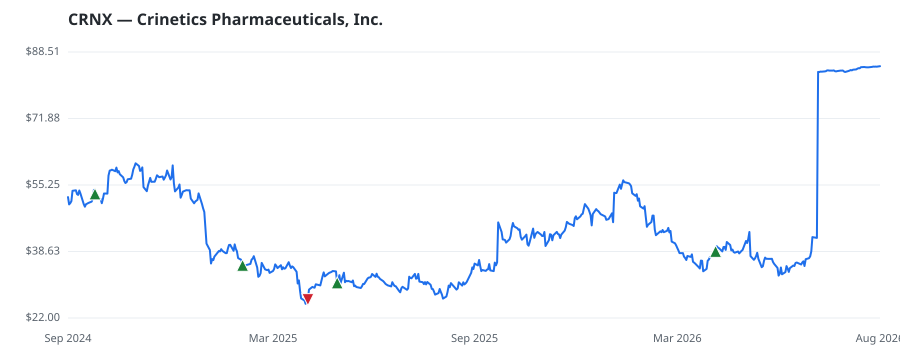

bullish · bearish · n/a — dots: price>SMA10 · SMA10>SMA50 · SMA50>SMA200 · up>down volume (20d)
Pharmaceuticals & Biotech · mid cap
Members who bought CRNX earned a dollar-weighted +98.4% from their disclosure dates, versus +18.6% for the S&P 500 over the same holding windows (+79.8% alpha).

▲ green = a disclosed purchase · ▼ red = a disclosed sale (plotted on disclosure date)
Crinetics Pharmaceuticals Inc is a commercial-stage pharmaceutical company focused on the discovery, development, and commercialization of novel therapeutics for rare endocrine diseases and endocrine-related tumors. Its main product, Palsonify (paltusotine), is a once-daily, oral treatment approved by the FDA for adults with acromegaly who have had an inadequate response to surgery and/or for whom surgery is not an option. Additionally, the company's development pipeline includes several programs, including a late-stage investigational candidate, atumelnant, currently in development for CAH an PHARMACEUTICAL PREPARATIONS · website
| Revenue | $7.7M | Net income | $-465.3M |
|---|---|---|---|
| Operating income | $-516.8M | Diluted EPS | $-4.95 |
| Assets | $1.1B | Equity | $992.1M |
| Member | Chamber | Out-performer | Disclosed buys $ | Return on buys |
|---|---|---|---|---|
| Gilbert Cisneros | house | — | $24K | +147.6% |
| Josh Gottheimer | house | — | $8K | -49.1% |
Disclosed $ figures are bracket midpoints — filings report ranges (e.g. $1,001–$15,000), not exact amounts.
| Fund | Fund alpha vs SPY | Position | % of book |
|---|---|---|---|
| BRAUN STACEY ASSOCIATES INC | +6% | $13M | 0.4% |
| GordonMD Global Investments LP | +7% | $5M | 2.3% |
Hedge data: SEC EDGAR 13F · ranked funds beat SPY in >50% of their quarters · fund alpha = mirror-portfolio return minus SPY.